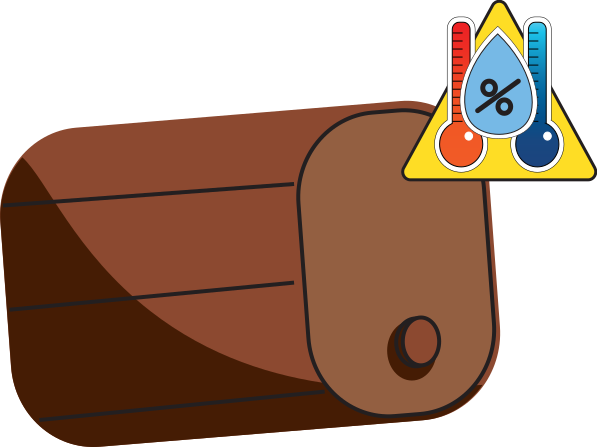
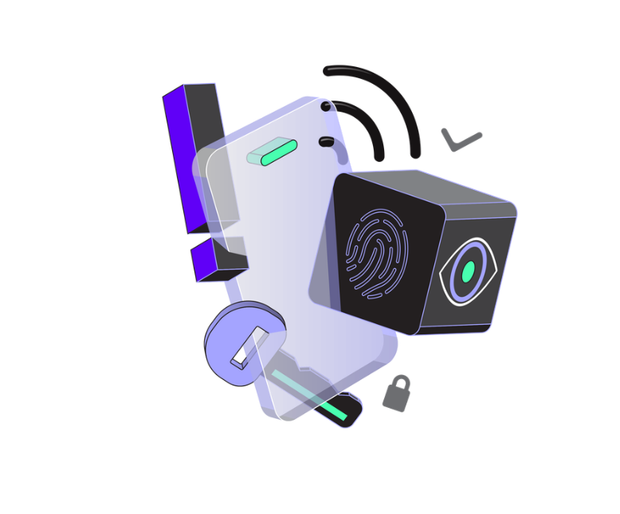
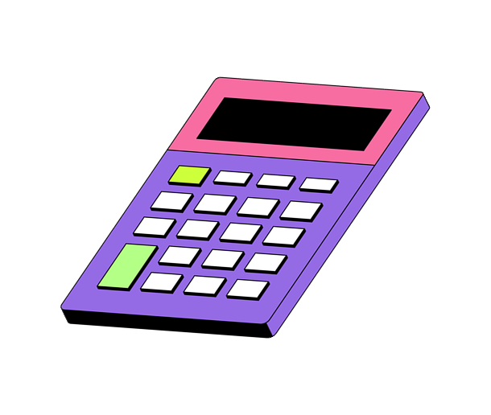

consistência é a chabe para o seu sucesso

Já imaginou diminuir as perdas causadas pelo angel´s share
Com a whis{key}, isso já é possível. Menos desperdício, mais sabor, mais resultado.
Descontrole do ambiente
É divulgado que a temperatura e umidade é um fator muito importante no processo de maturação de whiskey, o descontrole pode gerar uma alta taxa de Angel Share, mudanças no sabor do produto final, o que pode acarretar na perda de milhares de litros por ano.

Atendimento personalisado
Entre em contato conosco para um atendimento personalizado voltado para as suas necessidades, determinando as quantidades de sensores e níveis de acessos.
Monitoramento do ambiente
Realizamos monitoramento do seu ambiente de maturação 24h por dia, coletando dados de temperatura e umidade a fim de te auxiliar na tomada de decisão

Analise detalhada
A partir dos dados coletados realizaremos analise detalhadas do seu ambiente com o intuito de gerar conhecimento e insights para o produtor
Simulação de angel`s share
Faça um simulação de como o Angel’s Share afeta sua produção e faturamento com nosso simulador financeiro

QUEM SOMOS
Somos uma startup dedicada a transformar o processo de maturação do whiskey por meio da tecnologia e da inteligência de dados. Nosso foco é oferecer às destilarias um controle preciso e em tempo real de cada etapa da maturação, monitorando variáveis fundamentais que influenciam diretamente na qualidade do produto final.